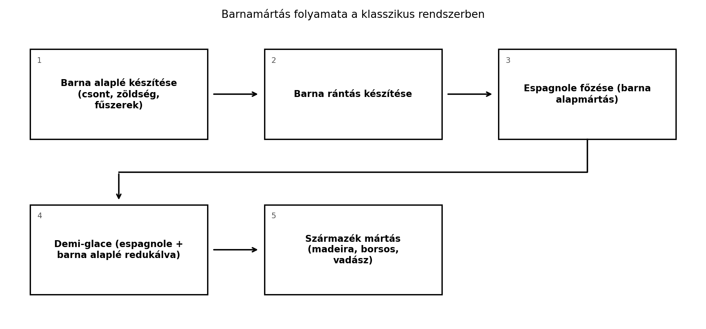

A vendég sült bélszínt kér, de a tányéron alig van szaft. A pecsenyelé nem díszítés: ez adja a húsok mély, sült ízét, a mártásfényt és a tányér nedvességét. Ha te készíted a barnamártást vagy a jus-t, nem „maradék szaftot” szolgálsz fel, hanem olyan sűrű, tiszta, fényes mártást, amitől az étel egyszerre lesz gazdag és elegáns.
Ebben az alfejezetben a klasszikus barna alapmártástól (espagnole, demi-glace) eljutsz a modern, liszt nélküli redukciós pecsenyelevekig. Megtanulod a deglazírozást, a mártás dúsítását vajjal (monter au beurre), és a leggyakoribb hibák elkerülését.
Képzeld el a következőt: egy sütőtálban egészben sült marha hátszín pihen. A tál alján sötét, illatos pörkölt húsnedv, zsír és zöldségdarabok tapadnak. Ha ezt hideg vízzel leöblíted, kidobod a legjobb alapanyagot. Ehelyett kevés bort vagy barna alaplevet öntesz a forró edénybe, fakéssel feloldod a leragadt ízeket, leszűröd, beforralod, és vajjal dúsítod. A végeredmény: fényes, selymes, mély barnás színű pecsenyelé.
A barnamártás hasonló logikát követ, de még tovább építi az ízt. A klasszikus demi-glace akár több órás főzéssel készül, miközben a csontokból kioldott kollagén, a sült zöldségek cukra és a rántás lisztje együtt sűrű, stabil mártást ad.

Definíció. A barna alapmártás (espagnole) sötét barna, sűrű, lisztes meleg mártás, amelyet barna rántásból és barna alapléből főznek, majd mirepoix-zal (nagyjából egyenlő arányú sárgarépa, vöröshagyma, zeller) és paradicsompürével, fűszerekkel hosszan, alacsony hőmérsékleten dúsítanak.
Definíció. A demi-glace a klasszikus konyha „fél-kivonata”: hagyományosan espagnole és barna alaplé nagyjából 1:1 arányú elegye, amelyet lassan, további zsírleszedés mellett beforralnak, amíg sűrű, fényes, nagyon ízes mártás nem lesz. A mai szaknyelvben sok konyha egyszerűen erősen redukált, kollagéndús barna pecsenyelevet hív demi-glace-nak.
Definíció. A pecsenyelé (jus) a sült húsból, csontból és zöldségből a sütés során kioldódott ízes folyadék, amelyet deglazírozással, redukálással és legfeljebb enyhe sűrítéssel készítenek el. A jus lié (lier = kötni) kötött, enyhén sűrített pecsenyelé: keményítővel vagy nyílgyökérkeményítővel (arrowroot) kötjük, vajjal fényesíthető.
Definíció. A deglazírozás (déglacer) az a művelet, amikor a sütés után az edény aljára sült, illatos pörkanyagot kevés folyadékkal (bor, alaplé, víz) feloldjuk, és ezt a folyadékot tovább főzzük.
Definíció. A monter au beurre (vajjal való befejezés) a mártás befejező művelete, amikor hideg, apró vajkockákat keverünk a meleg, de nem forró mártásba. A vaj lassan emulgeálódik, fényt és selymességet ad, és lekerekíti a savasságot.
Szabály. A barnamártás hosszú főzési időt igényel. A lisztes rántás nyers íze csak legalább 15–30 perces, mérsékelt főzés után tűnik el. A demi-glace akkor jó, ha a fakanál bevonja, és hűlés után kocsonyásan megdermed.
Higiénia. A barnamártást és a pecsenyelét magas fehérje- és nedvességtartalma miatt a veszélyes hőmérsékleti zónán kívül kell tartani. Készítés közben forralás közeli hőmérsékleten, készentartásnál legalább 63 °C-on tartsd (a 22. fejezetben egységes tanulási érték; ellenőrizendő: HACCP-terv/hatályos útmutató). A maradékot gyorsan, a jogszabályban rögzített időn belül hűtsd 5 °C alá (ellenőrizendő: konkrét visszahűtési idő és hőmérséklet).
A klasszikus espagnole három részből áll: sötét barna rántásból, gazdag barna alapléből és sűrítő ízesítőkből (mirepoix, paradicsompüré, fűszerek).
Eljárás lépésenként.
A rántás színe a mártásfejezetekben (22.1–22.3) a pirítás idejével együtt változik; az alábbi ábra a négy fokozatot egymás mellett mutatja. A fehér rántás (1.) csak gyöngyözik, nem színeződik (besamel, velouté), a világos (2.) halvány szalmasárga (kapor-, tárkonymártás), a barna (3.) sötét sárgásbarna és mogyoróillatú (espagnole). Ha fekete pöttyök jelennek meg, és a rántás kesernyés, füstös szagú (4.), megégett: nem menthető, ki kell dobni.
A szürke árnyalat csak jelzi a színt; a pirítási idők a fejezetek tanulási értékei, a láng erősségétől és a mennyiségtől függnek, ezért mindig a színt és az illatot figyeld. A barna és az égett rántás között kevés idő telik el: a barna rántást ne hagyd magára, és folyamatosan keverd.
A demi-glace lényege a további dúsítás. Keverj össze kész espagnole-t és barna alaplevet, körülbelül 1:1 arányban. Főzd lassan, gyakran leszedve a zsírt, amíg a mennyiség nagyjából a felére csökken, és a mártás sűrűn bevonja a kanalat. Szűrd át újra.
Megjegyzés. A mai konyhákban a klasszikus espagnole helyett gyakran tisztán csontalapléből, borból és sült zöldségből főznek be erős barna alapot. Ez a modern „demi-glace” nem lisztes, hanem főleg zselatinnal sűrített, ezért gluténmentes is lehet.
| Mártás | Alap | Főbb kiegészítők | Jellemző felhasználás |
|---|---|---|---|
| Madeira mártás | demi-glace | madeira bor, néha vaj | sült bélszín, kacsa, liba |
| Borsos mártás | demi-glace vagy pecsenyelé | zöld bors, konyak, tejszín, esetleg mustár | sült bélszín, hátszín, sertésszűz |
| Chasseur (vadász) mártás | barna alapmártás | gomba, mogyoróhagyma, fehérbor, paradicsom, tárkony, vaj | szeletelt húsok, szárnyas |
Figyelem. A magyar vadas mártás (vadas marha mártása: párolt gyökérzöldség, pecsenyelé, passzírozva, tejföl vagy tejszín, mustár, citrom, cukor) nem a klasszikus barna alapmártások származéka, ezért nincs a fenti táblában. Összefoglalva: nem vadhúsos mártás, a vadas marha, vagyis pácolt, sütve-párolt marha kísérője; a gyümölcsös vadmártásoktól is különbözik (lásd a 22.1 alfejezetet).
A pecsenyelé a sütés melléktermékéből készül, ezért mindig az adott sülthöz igazodik.
Eljárás lépésenként (klasszikus jus lié).
A képsor a fenti lépéseket mutatja a sütőedény metszetében. A hús kivétele után (1.) jól látszik a különbség a felül úszó zsír és az alján tapadó, sötét pörkanyag között: a zsírt leöntöd (2.), a pörkanyag marad. A folyadék felöntésekor (3.) a forró edényből gőz csap fel, ezért a fogantyút konyharuhával fogd, és ne hajolj fölé. Ezután felkaparod a pörkanyagot (4.), beforralod és átszűröd (5.), végül tűzről levéve hideg vajat keversz bele (6.).
A pörkanyag a pecsenyelé ízének forrása, de csak akkor, ha barna: a fekete, megégett pörkanyag keserűvé teszi a mártást, ezt nem kaparod fel. A HTML-kiadásban a hat kockát lépésenként lapozhatod.
Kritikus pont. A pecsenyeléhez adott bor vagy alaplé felforralása nem csak az íz miatt fontos: a nyers húsból szennyeződhetett folyadékot is átmelegíted. A deglazírozott mártást ezért mindig tartsd forrásban legalább a HACCP-tervedben meghatározott ideig, és a mártás hőmérsékletét keverés után az edény közepén, az aljától távol mérd (ellenőrizendő: pontos hőfok/idő).
A modern konyha gyakran kerüli a lisztes sűrítést, és a kollagén (zselatin), a redukció és a vaj adja a mártás állagát. A folyamat hasonló: erős barna alapléből, borral, esetleg gyümölcs- vagy zöldségpürével, beforralják a kívánt sűrűségre. Az ilyen mártás tisztább ízű, kevésbé „elesítő”, és alkalmazkodik a diétákhoz, mert lisztmentes lehet.
Példa. Egy modern kacsamell-pecsenyelé: a kacsasütő edényt deglazírozd vörösborral és kevés barna alaplével, add hozzá a kacsa összegyűjtött bőr nélküli szaftját, forrald be a felére, szűrd le, majd keverj bele hideg vajat.
A demi-glace sokat veszít a főzés során. Ha a recept szerint 1 000 ml barna alapléből és 1 000 ml espagnole-ból kiindulva nagyjából 1 000 ml demi-glace keletkezik (miután a folyadék felét elveszti a redukció), akkor 30 adag 50 ml-es mártásadaghoz 1 500 ml demi-glace szükséges. Mennyi barna alaplé kell hozzá?
Adott: 1 l demi-glace-hoz összesen 2 l barna alaplé
kell: 1 l az espagnole elkészítéséhez (rántás felöntése), további 1 l a
demi-glace-hoz (a technológiai lap szerint).
Keresett: 1 500 ml demi-glace-hoz szükséges összes
barna alaplé mennyisége.
Képlet: 2 l kiindulási folyadékból (1 l barna alaplé +
1 l espagnole) a redukció után 1 l demi-glace lesz, tehát a kiindulási
térfogat a kész demi-glace kétszerese; a barna alaplé szükséglet a
teljes kiindulási térfogattal egyenlő, mert az espagnole is barna
alaplével készül.
Számítás:
Megjegyzés: a valós veszteség az üst méretétől, a főzési hőmérséklettől és a mártás kívánt sűrűségétől függ, ezért üzemben a receptúra és a technológiai lap az irányadó (ellenőrizendő: saját receptúra).
Adagszám: 20 adag
Adagsúly: kb. 50 ml kész mártás (a kész demi-glace kb.
1 000 ml)
| Nyersanyag | Mennyiség 20 adagra | Megjegyzés |
|---|---|---|
| Barna alaplé | 2 000 ml (1 000 ml a rántás felöntéséhez + 1 000 ml a demi-glace-hoz) | csontból, zöldséggel főzve, átszűrve |
| Barna rántás | 120 g | 60 g zsiradék + 60 g liszt, barna színűre pirítva |
| Sárgarépa | 150 g | 1 cm-es kockára vágva |
| Vöröshagyma | 150 g | darabolva |
| Zellergumó | 100 g | tisztítva, kockázva |
| Paradicsompüré | 30 g | |
| Babérlevél | 1 db | |
| Kakukkfű | 1 ág | |
| Egész bors | 5–6 szem | |
| Vaj (behúzáshoz/dúsításhoz) | 40 g | hideg kockák |
Allergének: glutént tartalmazó gabonafélék (liszt), tej (vaj), zeller. A borral készülő változatban kén-dioxid és szulfitok lehetnek.
Eszközök és gépek: vastag aljú lábas, habverő, fakanál, merőkanál, finom szita vagy szűrőruha, hőmérő, rozsdamentes tárolóedény.
Előkészítés: 1. Mirepoix-t vágj. 2. Készítsd elő a barna alaplevet: ha hideg, melegítsd forrásig. 3. Mérd ki a rántáshoz való zsiradékot és lisztet.
Elkészítés: 1. Készíts barna rántást: olvaszd fel a zsiradékot, add hozzá a lisztet, és közepes lángon, folyamatosan keverve pirítsd mogyorószagig, sötét sárgásbarna színig (kb. 4–6 perc, figyelve). 2. Öntsd hozzá a forró barna alaplevet, habverővel keverd el, ne legyen csomós. 3. Add hozzá a mirepoix-t, a paradicsompürét, a babért, kakukkfüvet és borsot. 4. Forrald fel, majd vedd alacsonyra a lángot. Főzd 1–1,5 órán át, időnként szedd le a zsírt és a habot. 5. Szűrd át finom szitán, a zöldségeket nyomkodd ki, de ne erőltesd át a rostokat. 6. Öntsd vissza, és keverd hozzá a demi-glace-hoz a további barna alaplevet (1 000 ml). 7. Főzd tovább, amíg sűrű, fényes, és mennyisége nagyjából a felére csökken. Ez további 1–2 óra lehet. 8. Szűrd át újra, majd a tűzről levéve keverd bele a hideg vajkockákat: a mártás fényes, selymes lesz.
Kritikus pontok: - A barna rántás égetése tilos: ha keserű, fekete darabok jelennek meg, dobd ki, és kezdd újra. - A mártás forró alaplével való felöntésekor a keverés folyamatos; a csomós mártást később nehéz simára javítani. - A kész mártás készentartása 63 °C felett (ellenőrizendő); a maradékot gyorsan visszahűtve, 5 °C alatt tárold (ellenőrizendő). - Nyers alapanyaggal ne érintkezzen a kész mártás; használj külön edényt és kanalat.
Készentartás és tálalás: melegen, mártásos csészében vagy a tányérra fényesen áthúzva. A mártást ne öntsd a hús teljes felületére, mert elveszik a sült ropogósság.
Minőségi követelmények: fényes, sötét barna, sima, csomómentes; állaga bevonja a kanalat; íze mély, sült, harmonikus, nem keserű, nem lisztes, nem zsíros.
Tipikus hibák és javításuk: - Lisztes íz: a rántás nem főtt ki. Főzd tovább, vagy ha már sűrű, adj hozzá kevés alaplevet, és rotyogtasd tovább. - Zsíros: nem szedted le a zsírt. Hűtsd le kissé, szedd le a felső zsírréteget, majd forrald újra. - Túl sós: sótlan barna alaplével vagy vízzel hígítsd, de utána forrald vissza a sűrűségére.
Változat: madeira mártáshoz a kész demi-glace-t forrald fel, adj hozzá madeira bort, redukáld, és vajjal dúsítsd.
Cél: készíts fényes, ízes pecsenyelét egy sült hús
sütőedényéből.
Biztonsági korlát: Forró sütőedényt és forró zsiradékot
használj; az edény fogantyúja forró. A boros deglazírozásnál a pára és a
lángveszély miatt csak oktatói felügyelettel, tankonyhán gyakorold.
Otthon csak a leírt biztonsági feltételekkel.
Higiéniai előkészület: kézmosás, tiszta eszközök, a
sült húshoz használt nyers húsos eszközöket ne használd a kész
mártáshoz.
Lépések: 1. A sült húst vedd ki, tartsd melegen. 2.
Öntsd le a felesleges zsírt egy hőálló edénybe. 3. Tedd az edényt
közepes lángra, önts hozzá 100–150 ml bort vagy alaplevet. 4. Fakéssel
kapard fel a leragadt részeket. 5. Forrald be sűrűre, majd önts hozzá
300–400 ml barna alaplevet. 6. Főzd 5–10 percig. 7. Mérd a
maghőmérsékletet: forrás közben legalább 75 °C fölé kell emelkednie
(ellenőrizendő); majd szűrd le. 8. Tűzről levéve keverj hozzá hideg
vajkockákat, sózd, borsozd; a vajas mártást ezután már nem forraljuk. 9.
Tartsd melegen 63 °C felett, vagy azonnal tálald. 10. Dokumentáld:
milyen sültből készült, mikor, mekkora mennyiség, hőkezelési
hőmérséklet.
A barnamártás és a pecsenyelé ellenőrzése érzékszervi és mérhető:
Az állagot a kanálhát-próbával (nappe) ellenőrzöd: márts fakanalat a mártásba, emeld ki, és húzz ujjal (kóstolókanállal) csíkot a kanál hátán. A túl híg mártás lefolyik, a kanál átlátszik (1.); a helyes mártás egyenletesen bevonja a kanalat, és a csík megmarad, a széle nem folyik össze (2.); a túl sűrű vastag, csomós, nem folyik (3.).
A túl híg mártást tovább forralod vagy a recept szerint sűríted, a túl sűrűt kevés forró alaplével hígítod, a csomósat átszűröd. A mártás forró: a próbához hagyd néhány másodpercig hűlni a kanalat, és ne a puszta ujjadat mártsd bele.
Hiba 1: Kesernyés, égett íz.
Ok: a rántás túl sötétre sült, vagy a sütőedényben a pörkanyag
megégett.
Javítás: ha a rántás égett, ki kell dobni; ha a pecsenyelénél
enyhe, próbáld megmenteni, de ne keverj el fekete darabokat.
Megelőzés: a rántást folyamatosan keverd, ne hagyd; a
sütőedényt ne hagyd szárazon tovább pirulni.
Hiba 2: Lisztes, nyers íz.
Ok: a barna rántás nem főtt ki a mártásban, vagy túl alacsony
hőmérsékleten, rövid ideig rotyogott.
Javítás: tovább főzd, ha kell, hígítsd alaplével.
Megelőzés: az espagnole-t legalább 30 percig főzd, mielőtt
felhasználod.
Hiba 3: Zsíros, szétvált mártás.
Ok: nem szedted le a felesleges zsírt, vagy a vajas dúsítás
forró mártásban történt, emiatt a zsír kicsapódott.
Javítás: hűtsd, szedd le a zsírt, és turmixold vagy keverd
újra, de ne forrald a vajjal dúsított mártást.
Megelőzés: a zsírt mindig leszedni; a vajat a tűzről levett, de
még meleg mártásba keverd.
Hiba 4: Túl sós, túl sűrű vagy híg.
Ok: a redukció közben a só betöményedik; a sűrítés elmarad vagy
túlzott.
Javítás: sótlan alaplével hígítsd, és állítsd vissza az
állagot; ha híg, forrald tovább vagy keményítővel sűrítsd.
Megelőzés: sózz óvatosan, csak a legvégén, a redukció után.
Esemény: Egy fiatal szakács sült kacsamellhez készített pecsenyelét. Az edény aljára sült zsír forró volt, és ösztönösen hideg vizet öntött rá, hogy „ne égjen le”. A víz hirtelen gőzfelhőt képzett, az öntés közben a zsiradék felcsapott, és a mártás híg, zsíros lett. Ráadásul a pörkanyag nem oldódott fel, hanem a vízben szétfőtt, és a mártás kesernyés maradt.
Mi volt a hiba? A deglazírozás hideg folyadékkal, hirtelen történt; a zsírt nem öntötte le előbb; a mártást nem szűrte le, és nem forralta be eléggé.
Tanulság: Először mindig öntsd le a felesleges zsírt, majd adj hozzá kevés, lehetőleg meleg vagy szobahőmérsékletű folyadékot. A deglazírozás után a mártást be kell forralni, szűrni, és zsírmentesen, vajjal befejezni. Így lesz biztonságos és elegáns a végeredmény.
Önellenőrzés – válaszok
1. feladat (A)
Sorold fel a klasszikus espagnole főbb összetevőit, és írd mellé, melyik
allergént tartalmazhatja.
2. feladat (A)
Milyen arányban keverik hagyományosan az espagnole-t és a barna
alaplevet a demi-glace-hoz? Válaszodban használd a „körülbelül 1:1”
kifejezést.
3. feladat (B)
Rendezd sorba a pecsenyelé készítés lépéseit:
a) szűrés, b) deglazírozás, c) zsír leszedése, d) vajjal dúsítás, e)
folyadék hozzáadása, f) redukálás.
Írd le a helyes sorrendet.
4. feladat (B)
A recept 20 adag (50 ml/adag) demi-glace-hoz 1 000 ml barna alaplevet ír
a rántás felöntéséhez, a demi-glace-hoz pedig további 1 000 ml-t; a
kiindulási össztérfogat 2 000 ml (1 000 ml alaplé + 1 000 ml espagnole),
amelyből 1 000 ml demi-glace lesz. Mennyi barna alaplé kell 35 adaghoz,
ha marad az 50 ml/adag adagolás és a felező redukció?
5. feladat (C)
Egy vendég gluténérzékeny, és sült marhát kér pecsenyelével. Melyik
sűrítési eljárást választod, és milyen allergénkeresztszennyeződésre
kell figyelni? Tervezd meg röviden a gluténmentes pecsenyelé
készítését.
6. feladat (D)
A munkalap szerint készítettél pecsenyelét, de a mártás fénytelen,
zsíros és enyhén keserű. Hibaanalízis: sorold fel a lehetséges okokat,
és mindegyikhez írj javító lépést.
1. feladat
- Barna rántás: búzaliszt → glutén.
- Barna alaplé: marha- vagy borjúcsont; ha zellert is főztek benne,
zeller.
- Mirepoix: zeller, sárgarépa, hagyma → zeller.
- Vaj a dúsításhoz: tej.
- Paradicsompüré, fűszerek: általában nincs jelölendő allergén, de
ellenőrizni kell.
2. feladat
Körülbelül 1:1 arányban: 1 rész barna alapmártás (espagnole) és 1 rész
barna alaplé.
3. feladat
Helyes sorrend: c), e), b), f), a), d). Először leszedjük a zsírt, utána
folyadékot adunk, deglazírozunk, redukálunk, szűrünk, végül vajjal
dúsítunk.
4. feladat
35 adag, 50 ml/adag = 1 750 ml demi-glace.
Kiindulási térfogat: 1 750 ml · (2 000 / 1 000) = 3 500 ml.
Barna alaplé összesen: 3 500 ml (1 750 ml az espagnole-hoz, 1 750 ml a
demi-glace-hoz); szorzószámmal:
,
.
Ellenőrzés: 3 500 ml kiindulás, 50% veszteség, marad 1 750 ml, ami 35
adag.
5. feladat
Gluténmentes húslevesből induló, liszt nélküli pecsenyelét készítek: a
pörkanyagot borral vagy gluténmentes alaplével deglazírozom, redukálom,
majd keményítővel (kukoricakeményítővel) vagy kollagénnel sűrítem. A vaj
gluténmentes. Figyelni kell: a gluténmentes étel készítéséhez külön
edényt, kanalat és szitát használok; a vágódeszka és a munkalap ne
legyen szennyezett liszttel. A pecsenyelét nem sűríthetem a klasszikus
barnamártással, mert az lisztet tartalmaz.
6. feladat
Lehetséges okok és javítások: - Zsíros: nem szedted le a felesleges
zsírt; javítás: lehűtés után szedd le, majd forrald újra. - Fénytelen: a
vajdúsítás elmaradt vagy túl forró mártásban történt; javítás: meleg, de
nem forró mártásba keverj hideg vajkockákat. - Kesernyés: a pörkanyag
megégett; javítás: ha fekete darabok vannak, szűrd le, és ha
menthetetlen, készíts újat. A megelőzés: ne hagyd az edényt szárazon
tovább sülni.
A barna alapmártás (espagnole) barna rántásból és barna alapléből főzött, sötét, lisztes mártás, amelyet mirepoix-zal, paradicsompürével és fűszerekkel dúsítunk. A demi-glace hagyományosan espagnole és barna alaplé közel 1:1 arányú elegye, amelyet lassan, zsírleszedéssel, sűrűre redukálunk. A pecsenyelé (jus) a sült húsból és az edényben leragadt pörkanyagból készül: a zsírt leszedjük, kevés folyadékkal deglazírozunk, beforraljuk, szűrjük, majd hideg vajjal dúsítjuk (monter au beurre). A modern redukciós mártások liszt nélkül, kollagén és vaj segítségével sűrűsödnek. A gyakori hibák: kesernyés (égett rántás/pörkanyag), lisztes (nem főtt ki), zsíros (leszedés hiánya, vajkicsapódás). A mártásokat legalább 63 °C-on tartsd, a hűtést gyorsan végezd (ellenőrizendő: HACCP-határértékek). Allergének: glutén (liszt), tej (vaj), zeller, bor esetén szulfit. Továbbvitt eredmény: ezt a barnamártás- és pecsenyelé-technológiát használjuk a Zöldségből és főzelékféléből készülő meleg előételek alfejezetben (például meleg mártásokhoz), valamint az A francia konyha alfejezetben (klasszikus francia mártásoknál).